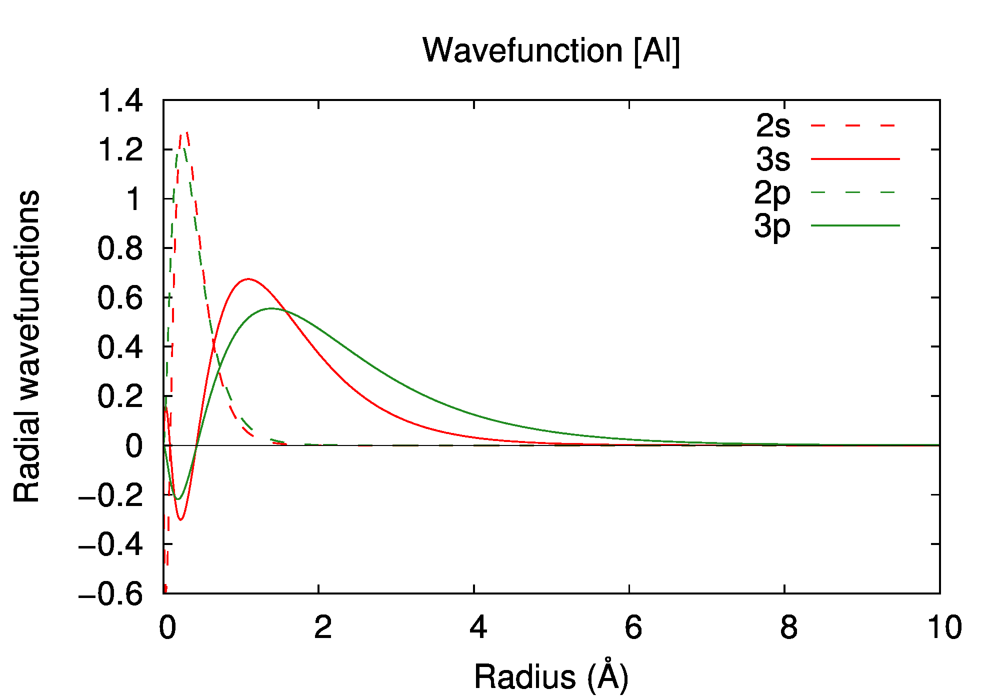
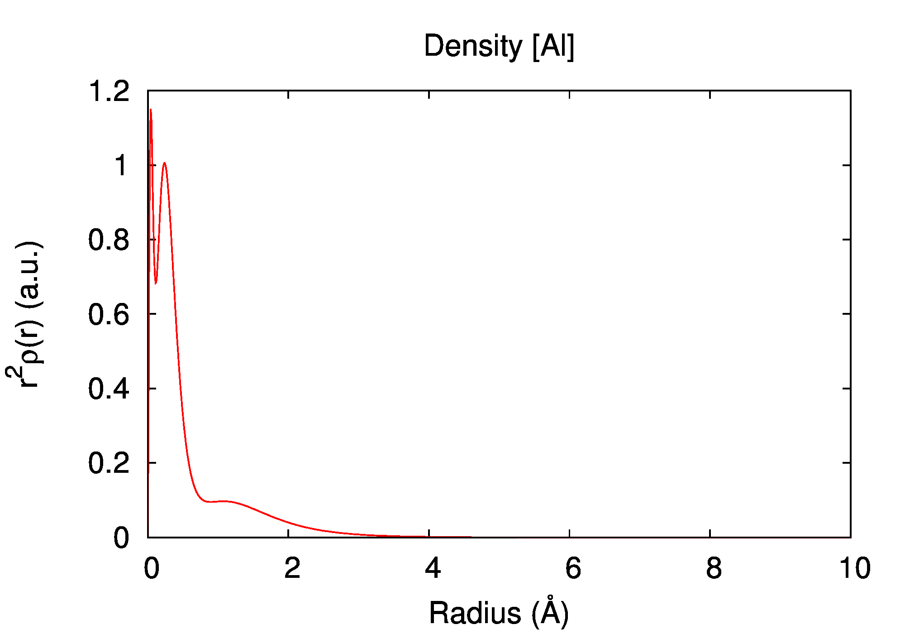
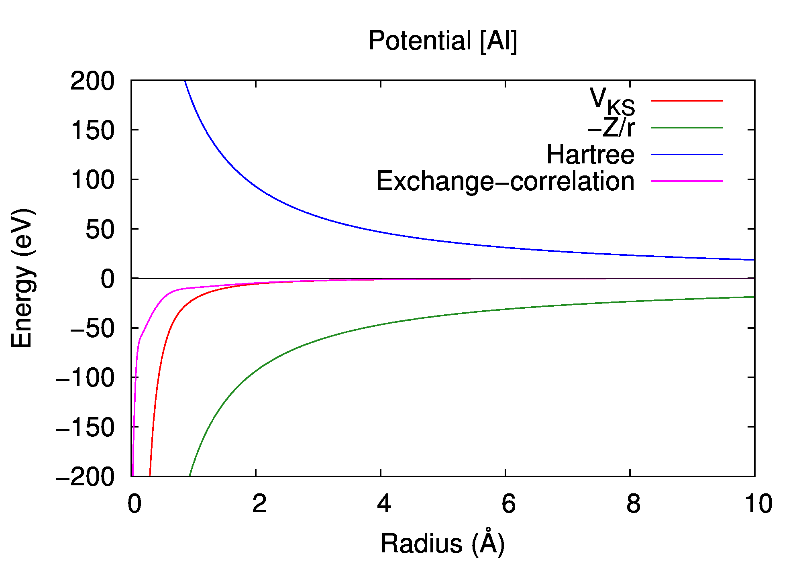

[Back to Periodic Table]
Aluminum (Al, Z=13)
Basic properties are computed by the atom-DFT program (atom_dft) based on the density functional theory with the local-density approximation [J. P. Perdew and Alex Zunger, Phys. Rev. B 23, 5048 (1981)].
Total energy
-241.3092 a.u.
Electronic structure
| state | occupation | εn (a.u.) | εn (eV) |
|---|---|---|---|
| 1s | 2 | -55.156023 | -1500.8836 |
| 2s | 2 | -3.934086 | -107.0528 |
| 2p | 6 | -2.563314 | -69.7519 |
| 3s | 2 | -0.287094 | -7.8123 |
| 3p | 1 | -0.102769 | -2.7965 |


